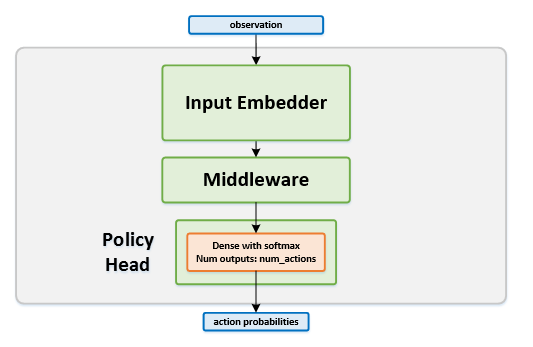

Policy Gradient¶
Actions space: Discrete | Continuous
References: Simple Statistical Gradient-Following Algorithms for Connectionist Reinforcement Learning
Network Structure¶
Algorithm Description¶
Choosing an action - Discrete actions¶
Run the current states through the network and get a policy distribution over the actions. While training, sample from the policy distribution. When testing, take the action with the highest probability.
Training the network¶
The policy head loss is defined as \(L=-log (\pi) \cdot PolicyGradientRescaler\).
The PolicyGradientRescaler is used in order to reduce the policy gradient variance, which might be very noisy.
This is done in order to reduce the variance of the updates, since noisy gradient updates might destabilize the policy’s
convergence. The rescaler is a configurable parameter and there are few options to choose from:
- Total Episode Return - The sum of all the discounted rewards during the episode.
- Future Return - Return from each transition until the end of the episode.
- Future Return Normalized by Episode - Future returns across the episode normalized by the episode’s mean and standard deviation.
- Future Return Normalized by Timestep - Future returns normalized using running means and standard deviations, which are calculated seperately for each timestep, across different episodes.
Gradients are accumulated over a number of full played episodes. The gradients accumulation over several episodes serves the same purpose - reducing the update variance. After accumulating gradients for several episodes, the gradients are then applied to the network.
-
class
rl_coach.agents.policy_gradients_agent.PolicyGradientAlgorithmParameters[source]¶ Parameters: - policy_gradient_rescaler – (PolicyGradientRescaler) The rescaler type to use for the policy gradient loss. For policy gradients, we calculate log probability of the action and then multiply it by the policy gradient rescaler. The most basic rescaler is the discounter return, but there are other rescalers that are intended for reducing the variance of the updates.
- apply_gradients_every_x_episodes – (int) The number of episodes between applying the accumulated gradients to the network. After every num_steps_between_gradient_updates steps, the agent will calculate the gradients for the collected data, it will then accumulate it in internal accumulators, and will only apply them to the network once in every apply_gradients_every_x_episodes episodes.
- beta_entropy – (float) A factor which defines the amount of entropy regularization to apply to the network. The entropy of the actions will be added to the loss and scaled by the given beta factor.
- num_steps_between_gradient_updates – (int) The number of steps between calculating gradients for the collected data. In the A3C paper, this parameter is called t_max. Since this algorithm is on-policy, only the steps collected between each two gradient calculations are used in the batch.